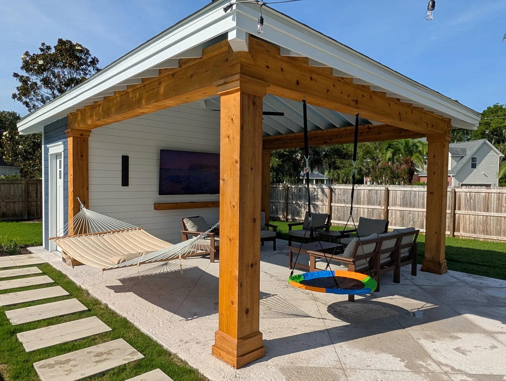

Patio and Paver Installation in Charleston, SC

Custom Patio and Paver Installation for Charleston Homes
A well-built patio turns an unused corner of the yard into the space where your family actually spends time. At Cramers Landscaping, we design and install paver patios across Charleston and the surrounding Lowcountry, built for outdoor entertaining, everyday relaxation, and long-term durability in our coastal climate. As a paver patio contractor in Charleston, SC, we handle every stage of the project: layout and design, excavation and base preparation, and final installation. Whether you're planning a compact seating area or a full outdoor entertaining space, our patio installation team brings the same attention to detail to every square foot.
Patio and Paver Options We Install
Every property calls for a different approach. We help homeowners choose the material and layout that fits their space, budget, and how they plan to use it.- Paver patios. Interlocking concrete or clay pavers in a wide range of colors, shapes, and patterns. Pavers are durable, resist cracking better than poured concrete, and allow individual pieces to be replaced if ever needed.
- Natural stone patios. Flagstone and other natural stone options for a more organic, textured look.
- Stamped concrete. A lower-cost alternative that mimics the look of pavers or stone while offering a smooth, seamless surface.
- Walkways and connector paths. Paver or stone walkways that tie your patio to the driveway, front entry, or backyard living areas.
Showcasing our Recent Works
Explore a selection of our recent projects that highlight our expertise, craftsmanship, and attention to detail. 1 / 6
1 / 6 2 / 6
2 / 6 3 / 6
3 / 6 4 / 6
4 / 6 5 / 6
5 / 6 6 / 6
6 / 6
Our Patio Installation Process
- Consultation and site assessment. We walk your property, discuss how you plan to use the space, and evaluate grading and drainage.
- Design and material selection. We help you choose a layout, paver or stone material, pattern, and border detail that fits your home's style.
- Excavation and base preparation. A properly compacted aggregate base is the foundation of a patio that won't shift, sink, or heave over time.
- Installation. Pavers or stone are set, cut to fit edges and curves, and secured with edge restraints.
- Joint sand and final cleanup. Polymeric sand is swept into the joints to lock pavers in place and discourage weed growth, and the site is cleaned before we walk you through the finished space.
The most common mistake we see on patios installed by other contractors: skipped or under-compacted base preparation. A thin base might look fine on installation day, but in Charleston's sandy soil it settles unevenly within a year or two, leaving pavers uneven, low spots that pool water, or edges that pull away from the border. Base depth and compaction is the step that's easiest to shortcut and most expensive to fix after the fact, which is why we don't skip it regardless of budget pressure on a project.

Why Charleston's Climate Matters for Patio Installation
Charleston's sandy soils, heavy seasonal rain, and humidity make proper base preparation and drainage planning essential for any patio project. A patio installed without adequate grading can trap water, shift over time, or develop uneven settling within a few seasons.
We grade every patio site to direct water away from your home's foundation and coordinate with our drainage and grading services when a yard has existing runoff or standing water issues. This groundwork is what separates a patio that looks good on installation day from one that still looks good five years later.

Patio Maintenance Checklist
Basic upkeep to keep a paver or stone patio looking like new for years:- Rinse quarterly to clear pollen, dirt, and organic buildup, more often under trees.
- Check joint sand annually and top off any joints that have visibly dropped.
- Pull weeds early. Weeds that establish in joint sand are easier to remove by hand before they root deeply.
- Re-seal every 2 to 3 years if the patio has a sealed finish, to maintain color and water resistance.
- Watch for low spots after heavy rain. Standing water that doesn't drain within a few hours can signal settling that's worth having inspected before it spreads.
- Keep gutters and downspouts clear near the patio. Charleston's heavy seasonal rain overwhelms poorly maintained drainage faster than most homeowners expect.

Combine Your Patio With These Services
Many of our patio clients add on:
- Retaining walls near me: For patios on sloped sites or to define a raised seating area
- Landscape lighting: Path and accent lighting to extend patio use into the evening
- Outdoor structures: Pergolas, pavilions, and cabanas for shade and definition
- Outdoor kitchens: Built-in grilling and entertaining stations adjacent to the patio
- Landscape installation: Planting beds and softscaping around the finished patio
Areas We Serve
Cramers Landscaping provides its services throughout:
We build patio installation in Charleston, SC projects throughout Charleston County, including Charleston, Mount Pleasant, West Ashley, Summerville, Folly Beach, and Sullivan's Island.
- Charleston, SC
- Mount Pleasant, SC
- Isle of Palms, SC
- North Charleston, SC
- James Island, SC
- West Ashley, SC
- Kiawah Island, SC
- Summerville, SC
- Daniel Island, SC
- Johns Island, SC
Frequently Asked Questions
How much does a paver patio cost in Charleston, SC?
Patio cost depends on square footage, material choice (pavers, natural stone, or stamped concrete), site grading needs, and any add-ons like a fire pit or seating wall. Contact Cramers Landscaping for a free consultation and project-specific estimate.
What's the difference between pavers and stamped concrete?
Pavers are individual interlocking units that resist cracking and can be replaced piece by piece if damaged. Stamped concrete is poured as a single slab textured to resemble pavers or stone, typically at a lower upfront cost, but it can crack over time and any cracks are harder to repair invisibly.
How long does patio installation take?
Most residential paver patios take between 3 to 10 business days depending on size, material, and site conditions.
Do paver patios need maintenance?
Paver patios need minimal upkeep: occasional rinsing, weed control in the joints, and re-applying polymeric sand every few years. We can walk you through basic care after installation.
Can you build a patio on a sloped yard?
Yes. We regrade the site or pair the patio with a retaining wall to create a level, stable surface on sloped Charleston properties.
Do you offer financing or payment plans?
Contact Cramers Landscaping directly to discuss project pricing and payment options for your specific patio installation.
What should I expect during the installation, and will my yard be a mess afterward?
Expect excavation equipment on site for the base prep phase, this is the loudest and most disruptive part of the project. Once the base is compacted and pavers are set, cleanup is thorough: excess material is hauled off, and the surrounding lawn or beds are cleaned before we consider the job finished.
Get in Touch
Request a Free Patio Consultation
Ready to create an outdoor space your family will actually use? Cramers Landscaping brings unmatched expertise, transparency, and care to every patio and paver installation in Charleston, SC.
Call (843) 614-9773 to schedule your free consultation, or explore our full range of services to elevate your entire landscape.
Location
9153 Markleys Grove Blvd, Summerville, SC
Phone
Hours
Monday – Friday: 8:00 AM – 5:00 PM
Saturday: 9:00 AM – 2:00 PM
Sunday: Closed